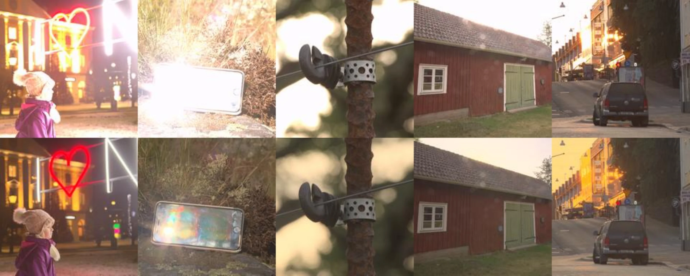
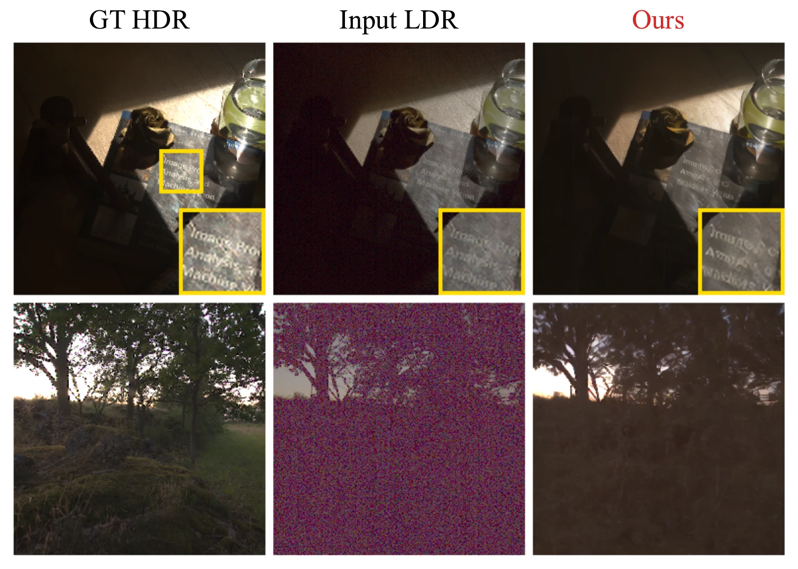

University of California San Diego
Recent generative methods for single-shot HDR image reconstruction show promising results, but often struggle with preserving fidelity to the input image: they hallucinate content, require separate models to handle highlights and shadows, or sacrifice interpretability by directly predicting the final HDR image. We address these limitations by re-casting single-shot HDR reconstruction as conditional video generation followed by a light-weight fusion of the generated frames. Given a single LDR input, we fine-tune a video diffusion model to generate an LDR image bracket with monotonically increasing exposures, and then fuse the generated frames using a lightweight U-Net that predicts per-pixel weights. This formulation is simple, interpretable, and effective. Rather than directly hallucinating an HDR image, it explicitly reconstructs the intermediate exposure stack and fuses it into the final output. Our method eliminates the need for separate models across exposure regimes and produces HDR reconstructions with high input fidelity. On quantitative benchmarks, our method achieves state-of-the-art results on several reconstruction metrics. Human evaluators further prefer our results in 72% of pairwise comparisons against existing methods. Finally, we show that this framework of recasting image reconstruction tasks as conditional video generation, followed by fusing the video frames, generalizes beyond HDR to other computational imaging tasks, including all-in-focus image recovery from a single defocus-blurred input.

We propose a two-stage pipeline for single-shot HDR reconstruction by reframing it as a conditional video generation problem. Our central observation is that an exposure bracket is structurally analogous to a video, where instead of scene motion, the temporal variation reflects changes in exposure. This suggests that video diffusion models can serve as strong priors for synthesizing plausible exposure stacks from a single image. Indeed, when prompted with a single image, an off-the-shelf video generation model already produces coherent bracketed exposures. To avoid spurious inconsistencies in the generated exposure stack, we fine-tune a video diffusion model to generate an LDR stack with monotonically increasing exposures. Unlike recent generative single-shot HDR methods, which rely only on spatial priors, our approach leverages both spatial and temporal priors by using a video generation model to generate a plausible image sequence conditioned on the input LDR image. We then fuse the synthesized stack using per-pixel blend weights predicted by a small network.
We reformulate single-shot HDR reconstruction as a conditional exposure-bracket generation problem, in which a single LDR image is used to generate an ordered sequence of LDR frames with monotonically increasing exposure values, which are then fused to recover the final HDR image. Because neighboring frames in this exposure stack exhibit smooth variations, the stack can be naturally viewed as a video sequence. We therefore cast exposure-bracket generation as a video synthesis problem and fine-tune a pretrained video diffusion model to synthesize the missing exposures conditioned on the input LDR image. During training, each HDR image is converted into a monotonic exposure stack ordered from low to high exposure, and this ordering is kept fixed throughout training and inference. As a result, the model always learns a canonical mapping from low to high exposures along the temporal axis, even when the observed conditioning frame is not the first frame in the sequence. We then train a separate, smaller network (Fusion UNet) to predict per-pixel weights for fusing the LDR frames generated by the fine-tuned video model.
Our model generates a video-like sequence of LDR frames at monotonically increasing exposures from a single LDR input. The fusion U-Net then combines them into the final HDR output.

Pick a scene, a method, and an EV stop. The image below re-tone-maps the HDR output of the chosen method at the chosen exposure. Comparing the same scene across methods at the same EV reveals where each method recovers highlights and shadows.
Reconstruction metrics on the SI-HDR benchmark. Best in bold. We report the scale-invariant Q* metrics (PSNR, SSIM, MAE, LPIPS) along with Q-JOD from HDR-VDP3 and inference time.
| Method | Q*-PSNR ↑ | Q*-SSIM ↑ | Q*-MAE ↓ | Q*-LPIPS ↓ | Q-JOD ↑ | Time ↓ |
|---|---|---|---|---|---|---|
| Ours | 22.36 ± 3.48 | 0.664 ± 0.156 | 0.060 ± 0.027 | 0.289 ± 0.111 | 7.51 ± 0.99 | ~15s |
| LEDiff | 18.97 ± 3.07 | 0.552 ± 0.128 | 0.098 ± 0.043 | 0.384 ± 0.128 | 6.55 ± 0.98 | ~15s |
| BracketDiff | 21.41 ± 3.87 | 0.734 ± 0.128 | 0.077 ± 0.044 | 0.353 ± 0.161 | 7.51 ± 1.21 | ~6min |
| X2HDR (SD2.1) | 21.24 ± 3.32 | 0.585 ± 0.150 | 0.068 ± 0.030 | 0.335 ± 0.120 | 7.17 ± 0.97 | ~15s |
| HDRCNN | 21.50 ± 6.27 | 0.601 ± 0.281 | 0.098 ± 0.073 | 0.342 ± 0.246 | 7.66 ± 1.68 | <1s |
| SingleHDR | 21.61 ± 3.93 | 0.698 ± 0.176 | 0.075 ± 0.039 | 0.302 ± 0.180 | 7.56 ± 1.40 | <1s |
A 20-participant pairwise study with 1920 total judgements. Participants saw each output centred against the ground-truth HDR reference and chose which of two reconstructions matched the GT more faithfully.
Ours preferred in 1382 / 1920 = 72.0% of pairwise comparisons. Statistically significant against chance for every baseline (binomial, smallest p < 10-4).
| Baseline | Ours-preferred | Win rate |
|---|---|---|
| LEDiff | 336 / 390 | 86.2% |
| HDRCNN | 279 / 379 | 73.6% |
| SingleHDR | 274 / 383 | 71.5% |
| BracketDiff | 259 / 383 | 67.6% |
| X2HDR (SD2.1) | 234 / 385 | 60.8% |
| All baselines | 1382 / 1920 | 72.0% |
Our method embodies the insight that many computational imaging problems can be re-cast as conditional video generation, followed by a task-specific fusion of the generated frames. In such settings, a strong video diffusion model can be fine-tuned to generate an ordered stack of intermediate images conditioned on the input, which can then be fused to obtain the final output. While we focus primarily on single-shot HDR reconstruction, the same framework extends naturally to other problems.
As a proof of concept, we also apply it to all-in-focus image recovery from a single defocus-blurred input. In this setting, we fine-tune the video model to generate a focal stack with monotonically varying focus depth, analogous to the monotonic exposure progression used in the HDR case, and train a separate Fusion UNet on the same stack distribution to fuse the generated frames into an all-in-focus image. We simulate training data using paired RGB images and depth maps from the NYUv2 dataset, rendering focal stacks with a simple depth-aware defocus blur model. The results below provide a strong proof of concept that our framework extends beyond HDR to other computational photography tasks.

@inproceedings{talegaonkar2026hdrvideo,
title = {Single-Shot HDR Recovery via a Video Diffusion Prior},
author = {Talegaonkar, Chinmay and Gandudi Suresh, Nikhil and Novack, Zachary
and Belhe, Yash and Nagasamudra, Priyanka and Antipa, Nicholas},
booktitle = {Advances in Neural Information Processing Systems},
year = {2026}
}